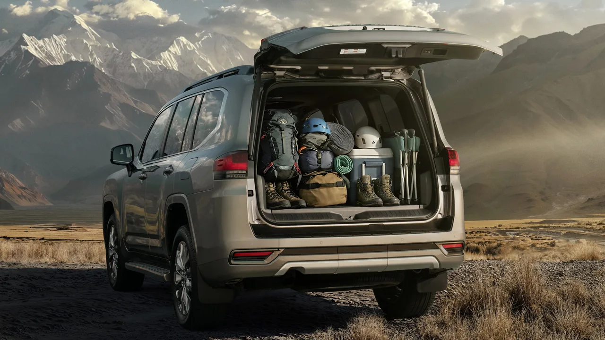
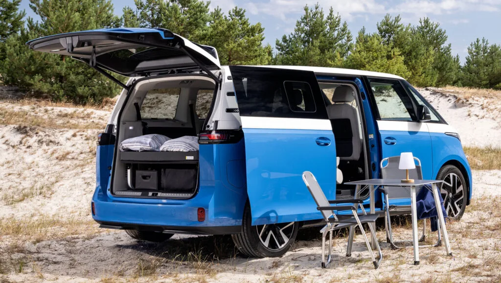

▲ 토요타는 2028년 일부 승용차부터 AI 기반 운전자보조 기술을 넣기 시작한다
자율주행 등급에 플러스가 두 개 붙는 단계는 없습니다. 그런데 토요타가 그렇게 부르고 있습니다.
토요타자동차가 2028년부터 인공지능을 활용한 고도 운전자보조 시스템을 일부 승용차에 적용할 계획입니다. 이른바 레벨2++입니다.
1. 왜 플러스가 두 개인가
레벨2++는 국제자동차기술자협회(SAE)가 공식적으로 정한 자율주행 단계가 아닙니다. 기존 레벨2보다 운전자보조 기능을 확대한 개념으로 쓰이는 표현입니다.
이 작명 자체가 현재 업계의 상태를 보여줍니다. 레벨3로 올라가면 특정 조건에서 시스템이 주행 책임을 지게 됩니다. 법적 부담이 완전히 달라집니다. 그래서 기능은 레벨3에 가깝게 올리면서 책임은 레벨2에 두는 중간 지대가 생겼습니다.
| 구분 | 성격 |
|---|---|
| 레벨 2 | SAE 공식 — 운전자 책임, 조향·가감속 보조 |
| 레벨 2+ / 2++ | 비공식 표현 — 기능 확장, 책임은 여전히 운전자 |
| 레벨 3 | SAE 공식 — 조건부 시스템 책임 |
| 레벨 4 | SAE 공식 — 특정 영역 내 완전 자율 |
2. 엔드투엔드라는 방식
토요타가 개발 중인 시스템은 카메라 등 차량 센서가 수집한 정보를 AI가 분석해 주행 경로와 차량 움직임을 판단하는 엔드투엔드(E2E) 기술을 활용합니다.
규칙을 하나하나 사람이 적어 넣는 대신, 입력에서 출력까지를 학습으로 잇는 방식입니다. 최근 자율주행 개발의 주류 흐름이기도 합니다.

▲ 토요타는 중국 시장에서도 운전자보조 강화를 전면에 내세우고 있다 ⓒ CnEVPost
3. AI를 감시하는 장치
엔드투엔드 방식의 약점은 예측 불가능성입니다. 학습된 모델이 왜 그런 판단을 했는지 설명하기 어렵고, 학습 범위 밖 상황에서 어떻게 행동할지 보장하기 어렵습니다.
토요타는 여기에 가드레일을 붙였습니다. AI가 예상 범위를 벗어난 판단을 할 경우 별도의 규칙 기반 시스템이 개입하는 방식입니다. AI 활용 범위를 넓히면서 안전성을 보완하기 위한 장치입니다.
📍 두 개의 두뇌를 쓰는 이유
AI는 학습하지 않은 상황에도 그럴듯하게 대응하지만, 왜 그랬는지를 검증하기 어렵습니다.
규칙 기반 시스템은 유연하지 않지만 동작이 예측 가능합니다. 두 가지를 겹쳐 쓰는 구조는 성능과 검증 가능성을 동시에 잡으려는 절충입니다.
4. 엔비디아, 그리고 웨이모
토요타는 엔비디아의 차량용 컴퓨팅 플랫폼을 활용한 차세대 차량 개발도 진행하고 있습니다.
상용차 분야에서는 2030년경 레벨4 수준의 자율주행 기술 도입을 목표로 개발을 추진합니다. 여기에 미국 자율주행업체 웨이모와도 자율주행 차량과 플랫폼 개발을 위한 협력을 진행 중입니다.
| 시점 | 내용 |
|---|---|
| 2028년 | 일부 승용차에 레벨2++ 적용 |
| 2030년경 | 상용차 레벨4 목표 |
| 협력 | 엔비디아 컴퓨팅 · 웨이모 플랫폼 |

▲ 승용에서 시작해 상용으로 넓히는 구조다. 상용차 쪽 목표가 레벨4다 ⓒ Carscoops
5. 현대차와 겹치는 시간표
공교롭게 시점이 비슷합니다. 현대차 역시 2028년 첫 소프트웨어 중심 차량(SDV) 양산 모델에 레벨 2+를 적용하겠다고 밝혔습니다. 역시 엔비디아 기반입니다.
두 회사 모두 같은 해에, 같은 컴퓨팅 파트너로, 비슷한 등급을 내놓겠다고 예고한 셈입니다. 2028년이 하나의 분기점이 되는 구도입니다.

▲ 승용과 상용을 함께 갖고 있다는 점이 토요타의 자율주행 전략에 폭을 만든다 ⓒ Carscoops
6. 기대치를 정리해 두면
레벨2++가 완전자율주행을 뜻하지는 않습니다. 이름에 플러스가 몇 개 붙든 운전 책임은 운전자에게 있습니다.
실제로 어디까지 시스템에 맡길 수 있는지는 적용 국가의 법규, 센서 구성, 그리고 양산차의 최종 기능이 공개돼야 판단할 수 있습니다. 2028년이라는 일정만 보고 운전대에서 손을 떼도 되는 차를 기대해서는 안 됩니다.